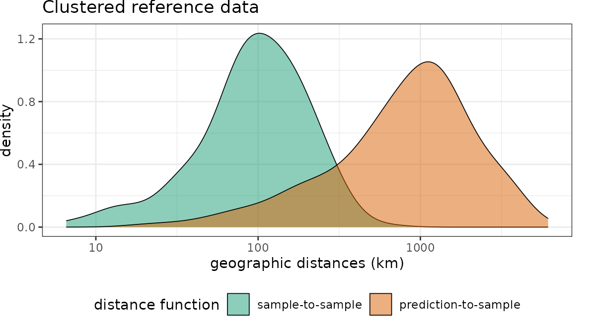
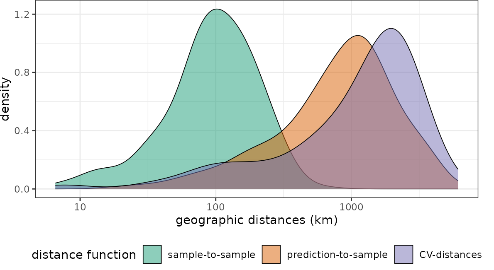
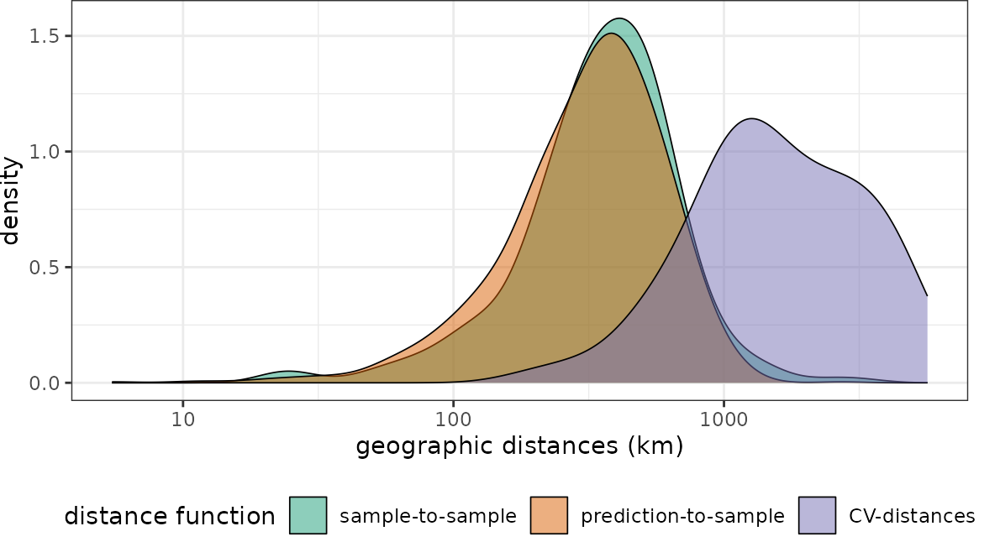
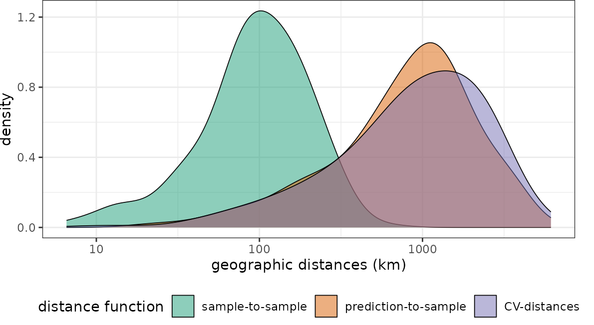
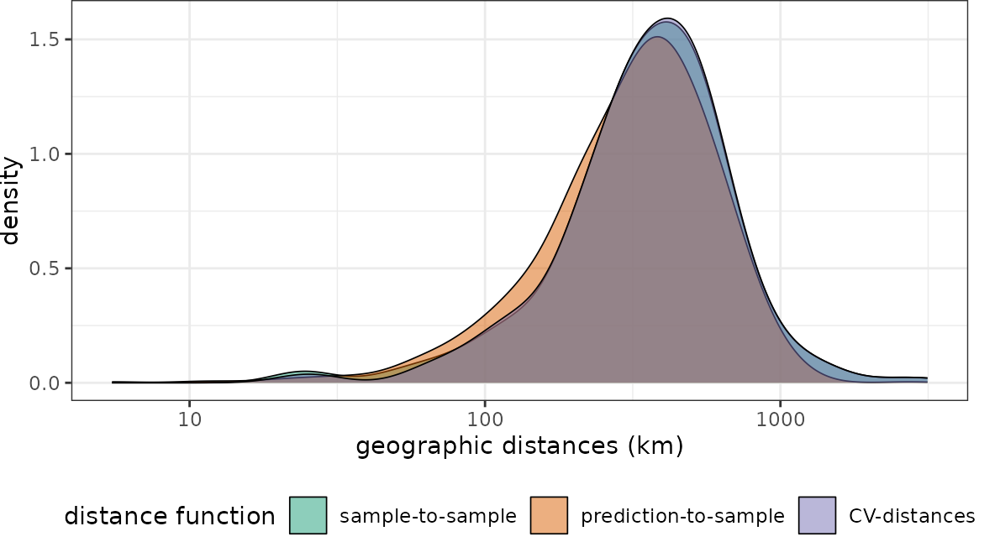

4. Visualization of nearest neighbor distance distributions
Hanna Meyer
2023-02-04
Source:vignettes/cast04-plotgeodist.Rmd
cast04-plotgeodist.RmdIntroduction
This tutorial shows how euclidean nearest neighbor distances in the geographic space or feature space can be calculated and visualized using CAST. This type of visualization allows to assess whether training data feature a representative coverage of the prediction area and if cross-validation (CV) folds (or independent test data) are adequately chosen to be representative for the prediction locations.
See e.g. Meyer and Pebesma (2022) and Milà et al. (2022) for further discussion on this topic.
Sample data
As example data, we use two different sets of global virtual reference data: One is a spatial random sample and in the second example, reference data are clustered in geographic space (see Meyer and Pebesma (2022) for more discussions on this).
Here we can define some parameters to run the example with different settings
seed <- 10 # random realization
samplesize <- 300 # how many samples will be used?
nparents <- 20 #For clustered samples: How many clusters?
radius <- 500000 # For clustered samples: What is the radius of a cluster?Prediction area
The prediction area is the entire global land area, i.e. we could imagine a prediction task where we aim at making global predictions based on the set of reference data.
ee <- st_crs("+proj=eqearth")
co <- ne_countries(returnclass = "sf")
co.ee <- st_transform(co, ee)Spatial random sample
Then, we simulate the random sample and visualize the data on the entire global prediction area.
Distances in geographic space
Then we can plot the distributions of the spatial distances of reference data to their nearest neighbor (“sample-to-sample”) with the distribution of distances from all points of the global land surface to the nearest reference data point (“sample-to-prediction”). Note that samples of prediction locations are used to calculate the sample-to-prediction nearest neighbor distances. Since we’re using a global case study here, throughout this tutorial we use sampling=Fibonacci to draw prediction locations with constant point density on the sphere.
dist_random <- plot_geodist(pts_random,co.ee,
sampling="Fibonacci",
unit="km",
showPlot = FALSE)
dist_clstr <- plot_geodist(pts_clustered,co.ee,
sampling="Fibonacci",
unit="km",
showPlot = FALSE)
dist_random$plot+scale_x_log10(labels=round)+ggtitle("Randomly distributed reference data")
dist_clstr$plot+scale_x_log10(labels=round)+ggtitle("Clustered reference data")
Note that for the random data set the nearest neighbor distance distribution of the training data is quasi identical to the nearest neighbor distance distribution of the prediction area. In comparison, the second data set has the same number of training data but these are heavily clustered in geographic space. We therefore see that the nearest neighbor distances within the reference data is rather small. Prediction locations, however, are on average much further away.
Accounting for cross-validation folds
Random Cross-validation
Let’s use the clustered data set to show how the distribution of spatial nearest neighbor distances during cross-validation can be visualized as well. Therefore, we first use the “default” way of a random 10-fold cross validation where we randomly split the reference data into training and test (see Meyer et al., 2018 and 2019 to see why this might not be a good idea).
randomfolds <- caret::createFolds(1:nrow(pts_clustered))
dist_clstr <- plot_geodist(pts_clustered,co.ee,
sampling="Fibonacci",
cvfolds= randomfolds,
unit="km",
showPlot=FALSE)
dist_clstr$plot+scale_x_log10(labels=round)
Obviously the CV folds are not representative for the prediction locations (at least not in terms of distance to a nearest training data point). I.e. when these folds are used for performance assessment of a model, we can expect overly optimistic estimates because we only validate predictions in close proximity to the reference data.
Spatial Cross-validation
This, however, should not be the case but the CV performance should be regarded as representative for the prediction task. Therefore, we use a spatial CV instead. Here, we use a leave-cluster-out CV, which means that in each iteration, one of the spatial clusters is held back.
spatialfolds <- CreateSpacetimeFolds(pts_clustered,spacevar="parent",k=length(unique(pts_clustered$parent)))
dist_clstr <- plot_geodist(pts_clustered,co.ee,
sampling="Fibonacci",
cvfolds= spatialfolds$indexOut,
unit="km",
showPlot=FALSE)
dist_clstr$plot+scale_x_log10(labels=round)
See that this fits the nearest neighbor distribution of the prediction area much better. Note that plot_geodist also allows inspecting independent test data instead of cross validation folds. See ?plot_geodist.
Why has spatial CV sometimes blamed for being too pessimistic ?
Recently, Wadoux et al. (2021) published a paper with the title “Spatial cross-validation is not the right way to evaluate map accuracy” where they state that “spatial cross-validation strategies resulted in a grossly pessimistic map accuracy assessment”. Why do they come to this conclusion? The reference data they used in their study where either regularly, random or comparably mildly clustered in geographic space, but they applied spatial CV strategies that held large spatial units back during CV. Here we can see what happens when we apply spatial CV to randomly distributed reference data.
# create a spatial CV for the randomly distributed data. Here:
# "leave region-out-CV"
sf_use_s2(FALSE)
pts_random_co <- st_join(st_as_sf(pts_random),co.ee)
ggplot() + geom_sf(data = co.ee, fill="#00BFC4",col="#00BFC4") +
geom_sf(data = pts_random_co, aes(color=subregion),size=0.5, shape=3) +
scale_color_manual(values=rainbow(length(unique(pts_random_co$subregion))))+
guides(fill = FALSE, col = FALSE) +
labs(x = NULL, y = NULL)+ ggtitle("spatial fold membership by color")
spfolds_rand <- CreateSpacetimeFolds(pts_random_co,spacevar = "subregion",
k=length(unique(pts_random_co$subregion)))
dist_rand_sp <- plot_geodist(pts_random_co,co.ee,
sampling="Fibonacci",
cvfolds= spfolds_rand$indexOut,
unit="km",
showPlot=FALSE)
dist_rand_sp$plot+scale_x_log10(labels=round)
We see that the nearest neighbor distances during cross-validation don’t match the nearest neighbor distances during prediction. But compared to the section above, this time the cross-validation folds are too far away from reference data. Naturally we would end up with overly pessimistic performance estimates because we make prediction situations during cross-validation harder, compared to what is required during model application to the entire area of interest (here global). The spatial CV chosen here is therefore not suitable for this prediction task, because prediction situations created during CV do not resemble what is encountered during prediction.
Nearest Neighbour Distance Matching CV
A good way to approximate the geographical prediction distances during the CV is to use Nearest Neighbour Distance Matching (NNDM) CV (see Milà et al., 2022 for more details). NNDM CV is a variation of LOO CV in which the empirical distribution function of nearest neighbour distances found during prediction is matched during the CV process.
nndmfolds_clstr <- nndm(pts_clustered, modeldomain=co.ee, samplesize = 2000)
dist_clstr <- plot_geodist(pts_clustered,co.ee,
sampling = "Fibonacci",
cvfolds = nndmfolds_clstr$indx_test,
cvtrain = nndmfolds_clstr$indx_train,
unit="km",
showPlot = FALSE)
dist_clstr$plot+scale_x_log10(labels=round)
The NNDM CV-distance distribution matches the sample-to-prediction distribution very well. What happens if we use NNDM CV for the randomly-distributed sampling points instead?
nndmfolds_rand <- nndm(pts_random_co, modeldomain=co.ee, samplesize = 2000)
dist_rand <- plot_geodist(pts_random_co,co.ee,
sampling = "Fibonacci",
cvfolds = nndmfolds_rand$indx_test,
cvtrain = nndmfolds_rand$indx_train,
unit="km",
showPlot = FALSE)
dist_rand$plot+scale_x_log10(labels=round)
The NNDM CV-distance still matches the sample-to-prediction distance function.
Distances in feature space
So far we compared nearest neighbor distances in geographic space. We can also do so in feature space. Therefore, a set of bioclimatic variables are used (https://www.worldclim.org) as features (i.e. predictors) in this virtual prediction task.
predictors_global <- stack(system.file("extdata","bioclim_global.grd",package="CAST"))
plot(predictors_global)Then we visualize nearest neighbor feature space distances under consideration of cross-validation.
# use random CV:
dist_clstr_rCV <- plot_geodist(pts_clustered,predictors_global,
type = "feature",
sampling="Fibonacci",
cvfolds = randomfolds,
showPlot=FALSE)
# use spatial CV:
dist_clstr_sCV <- plot_geodist(pts_clustered,predictors_global,
type = "feature", sampling="Fibonacci",
cvfolds = spatialfolds$indexOut,
showPlot=FALSE)
# Plot results:
dist_clstr_rCV$plot+scale_x_log10()+ggtitle("Clustered reference data and random CV")
dist_clstr_sCV$plot+scale_x_log10()+ggtitle("Clustered reference data and spatial CV")With regard to the chosen predictor variables we see that again the nearest neighbor distance of the clustered training data is rather small, compared to what is required during prediction. Again the random CV is not representative for the prediction locations while spatial CV is doing a better job.
References
- Meyer, H., Pebesma, E. (2022): Machine learning-based global maps of ecological variables and the challenge of assessing them. Nature Communications 13, 2208. https://doi.org/10.1038/s41467-022-29838-9
- Milà, C., Mateu, J., Pebesma, E., Meyer, H. (2022): Nearest Neighbour Distance Matching Leave-One-Out Cross-Validation for map validation. Methods in Ecology and Evolution 00, 1– 13. https://doi.org/10.1111/2041-210X.13851.